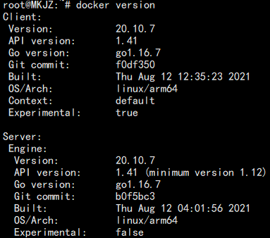
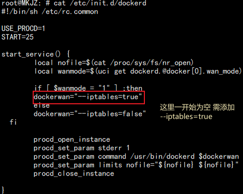

记一次排查Docker容器网络问题
前情提要
使用Openwrt安装docker 发现容器内无法访问外部网络 通过ping测试 容器内可访问局域网IP 通过ping域名测试 dns能够正常解析地址 但无法ping通ip地址 后经排查防火墙 发现问题
操作步骤
首先附上Docker版本信息


使用vi修改 /etc/init.d/dockerd 启动脚本，标红处启动参数设置成 --iptables=true执行命令 /etc/init.d/dockerd restart重启后发现容器内网络正常
总结
- dockerd 启动时需要 iptables 为 true 的参数，docker daemon 会自动为防火墙添加上相关规则
- 如需开放wan口访问容器权限，建议通过防火墙做端口转发来完成，通过修改/etc/config/dockerd中的wan_mode模式存在一定被攻击风险
- 如若修改配置文件 切记重启生效
本博客所有文章除特别声明外，均采用 CC BY-NC-SA 4.0 许可协议。转载请注明来自 MkJz's blog！